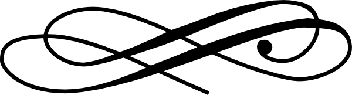

 Licni podaci
Zovem se Dragana Bogicevic i imam 36 godina. Rodjena sa 04.07.1983. godine u Beogradu, a od rodjenja zivim u Staroj Pazovi. Tu sam zavrsila osnovnu i srednju skolu, a potom sam studirala u Novom Sadu. Nakon zavrsenih studija, 2009. godine sam se zaposlila u kompaniji Jokey Bg doo u kojoj sam i danas zaposlena. 2011. sam se udala i imam jedno dete. Trenutno pohadjam IT obuku na Matematickom fakultetu u Beogradu u cilju prekvalifikacije u IT sektor. Vredna sam i odgovorna, istrajna u svemu sto zapocnem, ambiciozna i voljna za sticanje novih znanja i iskustava.
Obrazovanje
Osnove HTML-a i CSS-a, JavaScript-a, PHP-a i rad sa MySQL bazama podataka.
Zvanje: Diplomirani menadzer u lovnom turizmu
Radno iskustvo
Jokey Bg doo, Sales assistant
Komunikacija na dnevnom nivou sa domacim i eksportnim B to B kupcima, vodjenje racuna o njihovim potrebama i zahtevima, priprema ponuda za kupce sa aktivnim pracenjem reakcije kupaca na iste, cposete kupcima sa aktvnim izvestavanjem nadredjenima, priprema izvestaja prodaje za nadredjene u centrali, promocija novih proizvoda, aktivno koriscenje ERP sistema,CRM, ucesce u pravljenju budzet planova, priprema podataka i ponuda za ucesce na tenderima...
Jokey Bg doo, Customer service
Procesuiranje porudzbina kupaca, pracenje porudzbina, priprema dokumentacije za isporuke, priprema dokumentacije za izvoz/uvoz, aktivna interakcija izmedju kupaca i proizvodnje u cilju ispunjavanja zahteva i ocekivanja kupaca, ucestvovanje u povecanju prodaje.
Dodatna znanja
- Engleski jezik, nivo srednji do napredni
- Spanski jezik, nivo pocetni
- Nemacki jezik, nivo pocetni
Jezici
- Priprema podataka za ucesce na tendera
- Istrazivanje trzista
- Reklamacije, obrada reklamacija kupaca
Ostalo
Interesovanja
| Oblast | Omiljen/omiljena | Preporuka |
|---|---|---|
| Knjiga | Silmarilion | Covek po imenu Uve, Pisma iz Srbije, Silmalirion, Hobit, Kum... |
| Film | The Lord of the rings | The Lord of the rings, Hobit, Star Wars, El Cuerpo, Contra Tiempo... |
| Serija | Dr. House | Dr. House, Fargo, How I met your mother... |
| Muzika | Luciano Pavarotti - Caruso | Luciano Pavarotti - Caruso,Jonas Kaufmann - Parla più piano... |

The Lord of the Rings Ultimate Trilogy Trailer 2012
Luciano Pavarotti - Caruso